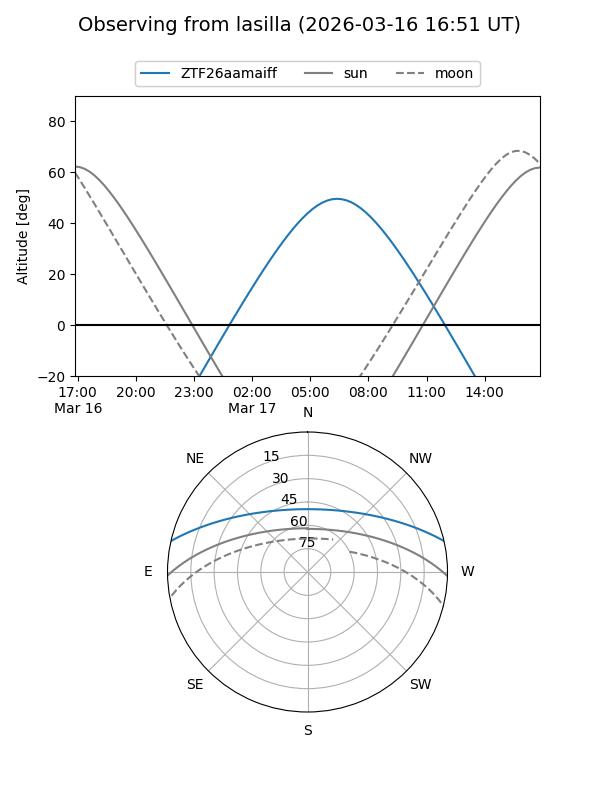
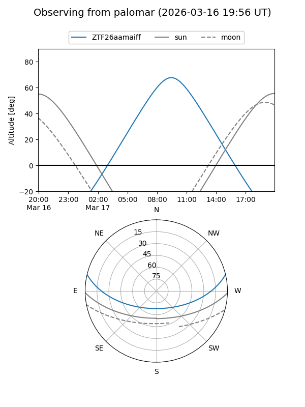

ZTF26aamaiff
Target ZTF26aamaiff at 2026-03-16 13:05
Aliases and brokers:
FINK: link
Lasair: link
ALeRCE: link
alt names
ZTF26aamaiff (ztf,fink_ztf)
Coordinates:
equatorial (ra, dec) = 199.5826,+11.27583
equatorial (HMS+DMS) = 13:18:19.83,+11:16:33.00
galactic (l, b) = (325.9621,+72.93385)
Flags:
Photometry:
last ztfg=18.40
1 ztfg detections
Lightcurve
Visibility


Additional plots